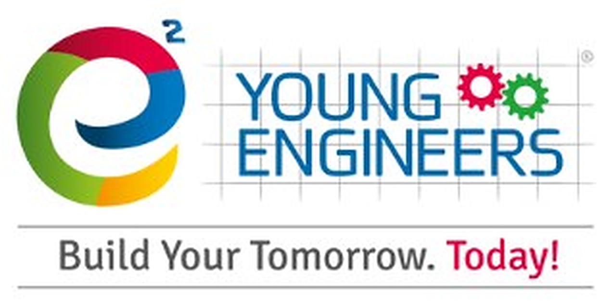

1 van 6
Voor nieuwsgierige koppen van 6 tot 12 jaar
Ruimte voor nieuwsgierigheid,
talent en uitdaging
Connectopia vzw begeleidt kinderen die meer uitdaging, begrip of ruimte nodig hebben. In Hasselt en in Genk, het hele jaar door.


Waar we voor staan
- Kennis en ervaring met HB en UHB
- Inclusief, prikkelarm, kleine groepen
Connectopia vzwwww.connectopia.one
